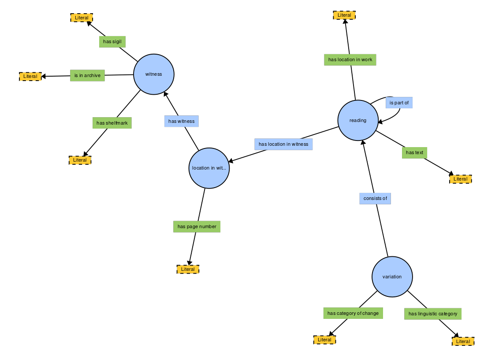
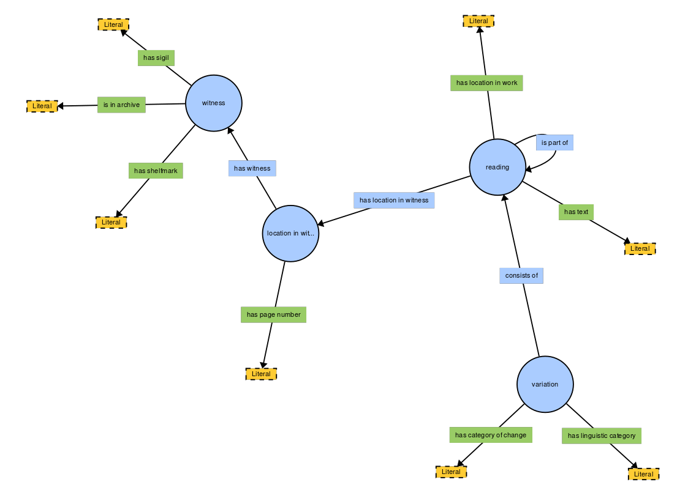

Exercises in modelling:
textual variants
Elena Spadini (UNIL - CRLR)
COMHUM 2018. Lausanne, 4 june
- textual variants
- conceptual model
- logical model (xml, sql, graph)
- conclusions
Case studies
- Lancelot en prose (13th century)
- Giacomo Leopardi, Alla luna (1820)
- Emilio Gadda, Eros e Priapo (1945)
Textual variants:
competing readings of (a portion of) a work
- spelling, punctuation, morphology, syntax, lexis (linguistic)
- deliberate or accidentally
- erroneous, innovative
- etc.
si resaut en son cheval et s'en vait cele part ou il oi le coc chanter
si saut en un cheval et va cele part ou il oi le coc chanter
si saut en son cheval et vet cele part ou il oi le coc chanter
si torna cele part ou il oi le coc chanter
oirent une cloche sonner et lors tourna le roy celle part
Analytical methods: critica delle varianti, critique génétique, stemmatics, phylogenetic, etc.
Or s'en vait Gal qui congie a pris lui et
Or s'en va Galehoz entre lui et
Or s'en vet Galehout entre lui et
Eide, Øyvind. 2014. ‘Ontologies, Data Modeling, and TEI’.
Journal of the Text Encoding Initiative, 8.
Journal of the Text Encoding Initiative, 8.
cangia
cambia
cangia
cangia [writing tool 1]
cambia [writing tool 2]
cangia [writing tool 3]
Categories of change: adiectio, detractio, immutatio, transmutatio
Linguistic categories: spelling, morphology, syntax, lexis
Conceptual model
- Distinction between features of the readings and features of the variation
- Append multiple features to each reading and variation
Congiuntiva o separativa non è a rigore l'innovazione in sé, quanto piuttosto la relazione che l'innovazione stabilisce, in determinati casi, rispettivamente nei confronti della copia (o delle copie) e dell'antigrafo.
The innovation per se is nor conjunctive not separative, but it is the relation that the innovation establishes, in certain cases, with the other copies and the antigraph.
Divizia, Paolo. 2011. ‘Fenomenologia Degli “Errori Guida”’.
Filologia e Critica XXXVI (1): 49–73.
Filologia e Critica XXXVI (1): 49–73.
Recording each class for each possible relationship each location variant can have with all corresponding location variants from the other witnesses is therefore the closest approximation to an explicit classification one can aim for
Vanhoutte, E. (2007). 'Traditional editorial standards and the digital edition'.
In Stronks, E. & Boot, P. (Eds.), Learned Love. DANS.
In Stronks, E. & Boot, P. (Eds.), Learned Love. DANS.
Conceptual model
- Distinction between features of the readings and features of the variation
- Append multiple features to each reading and variation
- No base witness to orient the variation
- Annotate each pair of readings or changing combinations of them
- Nest and concatenate variation sites
 


Encoding variants inside a document
⧼subst⧽
⧼del change="phase1"⧽cangia⧼/del⧽
⧼add⧽
⧼del change="phase2"⧽ca
⧼subst change="phase3"⧽
⧼del⧽mb⧼/del⧽
⧼add⧽ng⧼/add⧽
⧼/subst⧽
ia
⧼/del⧽
⧼/add⧽
⧼/subst⧽
Encoding variants between documents
⧼app⧽
⧼rdg xml:id="rdgA" type="error"⧽totes bontez pardue⧼/rdg⧽
⧼rdg xml:id="rdgB"⧽totes hennors pardues⧼/rdg⧽
⧼rdg xml:id="rdgC" type="error"⧽totes honors perdus⧼/rdg⧽
⧼rdg xml:id="rdgD"⧽toutez honneurs perdues⧼/rdg⧽
⧼/app⧽
Encoding variants between documents
⧼app⧽
⧼rdgGrp type="substitution" ana="orthography lexis"⧽
⧼rdg xml:id="rdgA" type="error"⧽totes bontez pardue⧼/rdg⧽
⧼rdg xml:id="rdgB"⧽totes hennors pardues⧼/rdg⧽
⧼/rdgGrp⧽
⧼rdg xml:id="rdgC" type="error"⧽totes honors perdus⧼/rdg⧽
⧼rdg xml:id="rdgD"⧽toutez honneurs perdues⧼/rdg⧽
⧼/app⧽
Encoding variants between documents
⧼app⧽
⧼rdg xml:id="rdgA" type="error"⧽totes bontez pardue⧼/rdg⧽
⧼rdgGrp type="substitution" ana="orthography"⧽
⧼rdg xml:id="rdgB"⧽totes hennors pardues⧼/rdg⧽
⧼rdg xml:id="rdgC" type="error"⧽totes honors perdus⧼/rdg⧽
⧼/rdgGrp⧽
⧼rdg xml:id="rdgD"⧽toutez honneurs perdues⧼/rdg⧽
⧼/app⧽
Encoding variants between documents
⧼app⧽
⧼rdgGrp type="substitution" ana="orthography lexis"⧽
⧼rdg xml:id="rdgA" type="error"⧽totes bontez pardue⧼/rdg⧽
⧼rdgGrp type="substitution" ana="orthography"⧽
⧼rdg xml:id="rdgB"⧽totes hennors pardues⧼/rdg⧽
⧼/rdgGrp⧽
⧼rdg xml:id="rdgC" type="error"⧽totes honors perdus⧼/rdg⧽
⧼/rdgGrp⧽
⧼rdg xml:id="rdgD"⧽toutez honneurs perdues⧼/rdg⧽
⧼/app⧽

Selected bibliography
Andrews, T. L. (2016). Analysis of Variation Significance in Artificial Traditions Using Stemmaweb. Digital Scholarship in the Humanities, 31(3), 523–539.
Andrews, T. & van Zundert, J. (2016). Apparatus vs. Graph: New Models and Interfaces for Text. In Interface Critique (pp. 183-206). (Kaleidogramme; Vol. 139). Berlin: Kulturverlag Kadmos.
Brandoli, Cristina. “Due Canoni a Confronto: I Luoghi Di Barbi E Lo Scrutinio Di Petrocchi.” In Nuove Prospettive Sulla Tradizione Della Commedia. Una Guida Filologico Linguistica Al Poema Dantesco, edited by Paolo Trovato, 99–214. Firenze: Cesati, 2007.
Camps, Jean-Baptiste. (2012) “Louis Havet, Cesare Segre, critique verbale et diasystème.” Blogpost. Sacré Gr@@l (blog).
Ciotti, F., & Tomasi, F. (2016). Formal Ontologies, Linked Data, and TEI Semantics. Journal of the Text Encoding Initiative, (Issue 9).
Ciula, A., & Eide, Ø. (2017). Modelling in digital humanities: Signs in context. Digital Scholarship in the Humanities, 32(suppl_1), 33–46.
Colwell, E. C., & Tune, E. W. (1964). Variant Readings: Classification and Use. Journal of Biblical Literature, 83(3), 253–261.
Cummings, J., Hadley, M., & Noble, H. (2017). It has moving parts! Interactive visualisations in digital publications. Presented at the DiXiT Workshop The Educational and Social Impact of Digital Scholarly Editions.
Eide, Ø. (2014). Ontologies, Data Modeling, and TEI. Journal of the Text Encoding Initiative, 8.
Haentjens Dekker, R., & Birnbaum, D. J. (2017). It’s more than just overlap: Text As Graph. In Proceedings of Balisage: The Markup Conference 2017.
Italia, P. (2010). Che cosa è la filologia d’autore. Roma: Carocci.
Schauweker, Y. (2013). Variantes « significatives » et variantes « récurrentes ». Repenser l’appareil critique. In Actes du XXVIIe Congrès international de linguistique et de philologie romanes (Nancy, 15-20 juillet 2013). ATILF.
Spadini, E. (2017). The role of the base manuscript in the collation of medieval texts. In Advances in Digital Scholarly Editing. Papers presented at the DiXiT Conferences in The Hague, Cologne, and Antwerp (pp. 345–350). Leiden: Sidestone Press.
Tomasi, F., Daquino, M., & Giovannetti, F. (2018). Linked data ed edizioni scientifiche digitali. Esperimenti di trasformazione di un Quaderno di appunti. Presented at the 7th AIUCD Conference. Cultural Heritage in the Digital Age, Bari.
Unsworth, J. (2002). What is Humanities Computing and What is not? Jahrbuch Für Computerphilologie, 4, 71–84.
Vanhoutte, E. (2007). Traditional editorial standards and the digital edition. In Stronks, E. & Boot, P. (Eds.), Learned Love. DANS.
Andrews, T. & van Zundert, J. (2016). Apparatus vs. Graph: New Models and Interfaces for Text. In Interface Critique (pp. 183-206). (Kaleidogramme; Vol. 139). Berlin: Kulturverlag Kadmos.
Brandoli, Cristina. “Due Canoni a Confronto: I Luoghi Di Barbi E Lo Scrutinio Di Petrocchi.” In Nuove Prospettive Sulla Tradizione Della Commedia. Una Guida Filologico Linguistica Al Poema Dantesco, edited by Paolo Trovato, 99–214. Firenze: Cesati, 2007.
Camps, Jean-Baptiste. (2012) “Louis Havet, Cesare Segre, critique verbale et diasystème.” Blogpost. Sacré Gr@@l (blog).
Ciotti, F., & Tomasi, F. (2016). Formal Ontologies, Linked Data, and TEI Semantics. Journal of the Text Encoding Initiative, (Issue 9).
Ciula, A., & Eide, Ø. (2017). Modelling in digital humanities: Signs in context. Digital Scholarship in the Humanities, 32(suppl_1), 33–46.
Colwell, E. C., & Tune, E. W. (1964). Variant Readings: Classification and Use. Journal of Biblical Literature, 83(3), 253–261.
Cummings, J., Hadley, M., & Noble, H. (2017). It has moving parts! Interactive visualisations in digital publications. Presented at the DiXiT Workshop The Educational and Social Impact of Digital Scholarly Editions.
Eide, Ø. (2014). Ontologies, Data Modeling, and TEI. Journal of the Text Encoding Initiative, 8.
Haentjens Dekker, R., & Birnbaum, D. J. (2017). It’s more than just overlap: Text As Graph. In Proceedings of Balisage: The Markup Conference 2017.
Italia, P. (2010). Che cosa è la filologia d’autore. Roma: Carocci.
Schauweker, Y. (2013). Variantes « significatives » et variantes « récurrentes ». Repenser l’appareil critique. In Actes du XXVIIe Congrès international de linguistique et de philologie romanes (Nancy, 15-20 juillet 2013). ATILF.
Spadini, E. (2017). The role of the base manuscript in the collation of medieval texts. In Advances in Digital Scholarly Editing. Papers presented at the DiXiT Conferences in The Hague, Cologne, and Antwerp (pp. 345–350). Leiden: Sidestone Press.
Tomasi, F., Daquino, M., & Giovannetti, F. (2018). Linked data ed edizioni scientifiche digitali. Esperimenti di trasformazione di un Quaderno di appunti. Presented at the 7th AIUCD Conference. Cultural Heritage in the Digital Age, Bari.
Unsworth, J. (2002). What is Humanities Computing and What is not? Jahrbuch Für Computerphilologie, 4, 71–84.
Vanhoutte, E. (2007). Traditional editorial standards and the digital edition. In Stronks, E. & Boot, P. (Eds.), Learned Love. DANS.